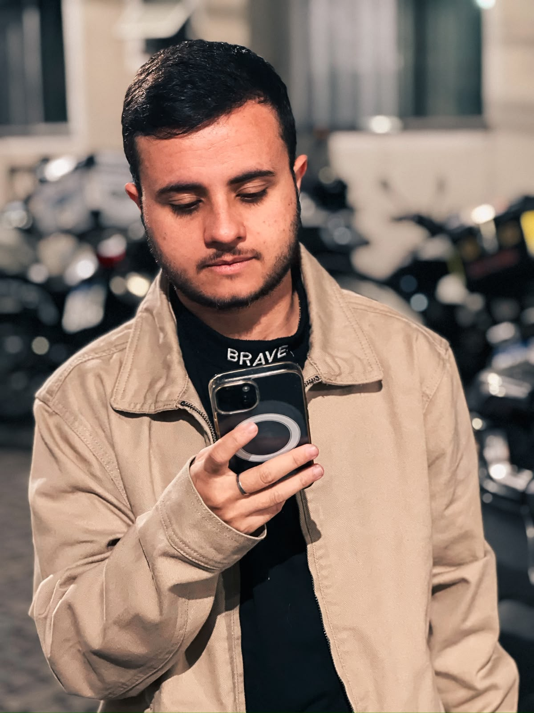

Marca
Branding &
Identidade
Posicionamento, sistemas visuais e identidades que continuam reconhecíveis em diferentes pontos de contato.
Como eu penso
Não acredito em design apenas para deixar algo bonito.
Um projeto começa antes do Illustrator abrir.
Meu trabalho parte de contexto, estratégia e problema. A estética vem como consequência de decisões capazes de tornar uma mensagem mais clara, uma marca mais consistente e uma experiência mais relevante.
Trajetória
What I do
Não penso meu trabalho como uma sequência de serviços isolados. Cada projeto pede uma combinação diferente de repertório, processo e execução — do posicionamento de uma marca à interface que coloca essa estratégia em uso.
Marca
Posicionamento, sistemas visuais e identidades que continuam reconhecíveis em diferentes pontos de contato.
Experiência
UX/UI, landing pages e sistemas pensados a partir de necessidades reais de pessoas e negócio.
Contexto, problema e intenção antes da estética.
Expressão
Conceitos criativos, key visuals e desdobramentos capazes de sustentar uma mensagem em diferentes formatos.
Clareza
Informação complexa transformada em comunicação acessível, consistente e fácil de navegar.
Comunicação interna · Social · Apresentações · Automação & IA entram como ferramentas desse mesmo ecossistema — não como caixas separadas.

Sobre
Sou Bernardo Ramalho, designer formado em Design de Mídia Digital pela PUC-Rio.
Minha trajetória passou por branding, comunicação interna, projetos editoriais, campanhas, eventos e experiências digitais.
Gosto especialmente de projetos em que design não entra apenas no final para “deixar bonito”, mas participa da construção da solução.
Diferencial
Também trabalho na camada invisível do design: fluxos com Microsoft Power Automate, IA aplicada à criação, automação de tarefas repetitivas, organização de demandas e melhoria de processos criativos.
Contato
Projeto, oportunidade profissional ou uma boa troca sobre design — escolha o canal que fizer mais sentido.